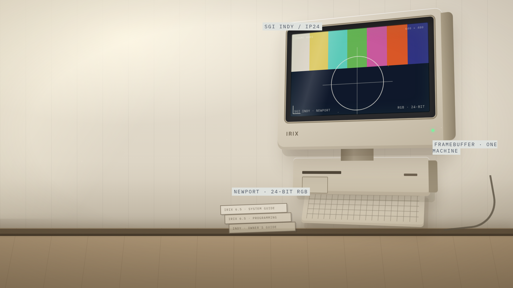

A documentary about one logical computer
The Logical
Computer
A 1994 workstation. One operating system. 1–128 machines.
IRIX 7 · built from the November 2026 plan
01 · A frame on a desk
1994. An SGI Indy sits on a desk.